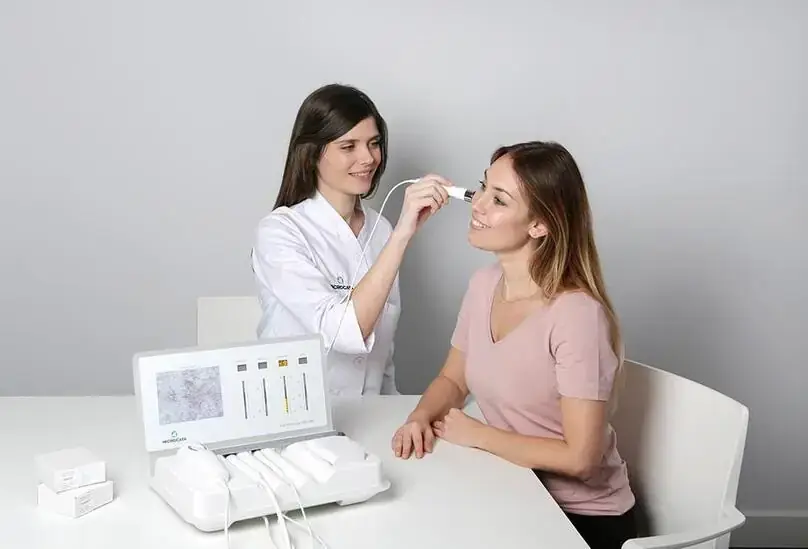

Asesoramiento nutricional
Servicio de orientación nutricional para mejorar tu bienestar.
HORARIO 365 DÍAS
Abrimos todos los días del año de 8:00 a 22:00.
¡Escríbenos por WhatsApp!
Visión
Nuestros más de 30 años de experiencia nos permiten acompañar a cada persona en el cuidado de su salud, poniendo el foco en la prevención y en sus necesidades individuales para ayudarle a disfrutar de una mejor calidad de vida. En Farmacia de l’Església trabajamos para que cada persona encuentre el mejor asesoramiento y las soluciones innovadoras y profesionalesque necesita para cuidarse mejor, hoy y en el futuro.
Servicios Farmacéuticos
No dudes en preguntarnos para poder ayudarte con lo que te inquieta.
Servicio de orientación nutricional para mejorar tu bienestar.
Programa de apoyo para dejar de fumar con seguimiento personalizado.

Recomendaciones personalizadas para el cuidado de la piel y el cabello.
Control y acompañamiento para prevenir y monitorizar la diabetes.
Valoración para prevenir problemas cardiovasculares y mejorar salud.
Preguntanos por estos servicios que se extienden más allá de las analíticas estandard del sistema público de salud. Por supuesto, garantizamos la total discreción y confidencialidad con orientación sanitaria adecuada y cercana.
Tarjeta cliente
Encargos Online
Este servicio pretende facilitar, en la medida de lo posible, la compra de tus productos y ahorrarte tiempo a la hora de realizarlos y de recogerlos.
Realiza tu encargo